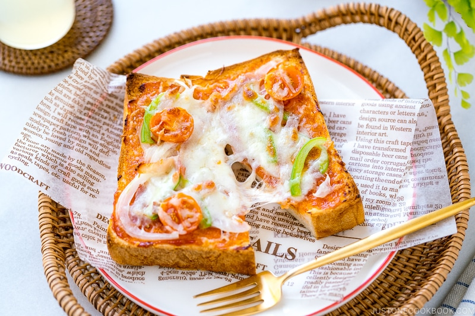

Shokupan Pizza Toast

Shokupan pizza toast is a delicious and easy-to-make dish that features thick slices of Shokupan bread topped with pizza sauce,
cheese, and other toppings of your choice. The Shokupan bread provides a soft and fluffy base for the pizza toppings, while the
sauce and cheese add a savory and gooey layer of flavor. The toppings can vary depending on your preferences, but common options
include diced vegetables, sliced meats, and herbs. The pizza toasts are typically broiled in the oven until the cheese is melted
and bubbly, making for a warm and satisfying meal or snack.
Ingredients:
- Shokupan bread (Recipe)
- Pizza Sauce
- Mozzarella Cheese/li>
- Pepperoni
- White Onion
- Green Bell Pepper
Steps
- Preheat your oven's broiler to high.
- Cut thick slices of Shokupan bread and lightly toast them in a toaster or under the broiler for a few minutes until they are slightly crispy on the surface.
- Spread a generous amount of pizza sauce on each slice of bread.
- Sprinkle shredded mozzarella cheese on top of the sauce.
- Add a few pepperoni slices on top of the cheese.
- Thinly slice white onion and green bell pepper and sprinkle them on top of the pepperoni.
- Place the pizza toasts on a baking sheet and place them under the broiler for 2-3 minutes, or until the cheese is melted and bubbly.
- Remove the pizza toasts from the oven and let them cool for a few minutes before serving.
- Serve and enjoy your Shokupan pizza toast!